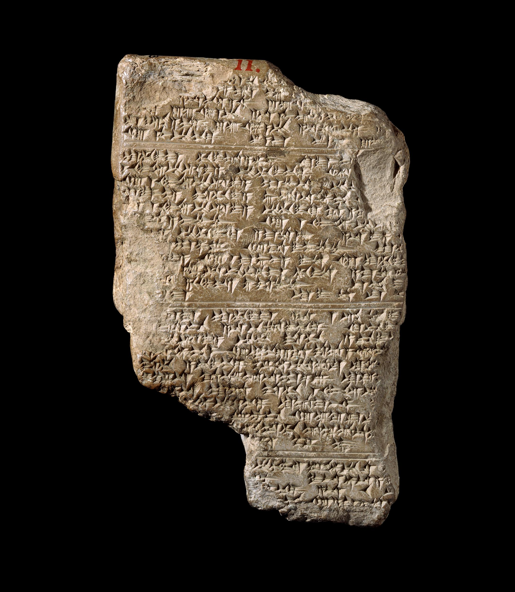

Across Uses
Choose
Work
| Title | Tablet E29794 (Museum number) |
| Date/Period | 14th century BCE |
| Findspot | El-Amarna, Egypt |
| Author | -- |
| Current location | British Museum |
| Object | Clay tablet |
| Dimensions | Height 14.70 cm, width 9.50 cm, depth 2.40 cm. |
| Materials | Clay |
| Credits | © The Trustees of the British Museum (CC BY-NC-SA 4.0). |
Clay tablets were cheap, affordable writing supports used for almost any daily activities, from business accounting and record keeping to agricultural planning, laws recording, literary texts. On top of that, for centuries they were also the preferred choice to write and deliver messages.
Clay tablets, one of the earliest writing supports in human history, were used for almost everything, from private daily activities to official religious or political deeds. They were durable and resistant, and easy to create and handle. Originally, they were used mostly for business purposes, to keep record of the goods in storage or of the transactions. With time, they became the preferred solutions to all activities, up and including literature and message delivery.
In ancient civilizations, mostly two criteria influenced the choice of writing support: the availability of materials and the purpose and final use that people were trying to achieve. The availability of materials depended both on the local resources and on the goods that one could find in the markets and along the trade routes: depending on the materials, local resources could be cheap, like clay, or expensive, like marble. In Mesopotamia, Near East and some Mediterranean regions, clay was a cheap, local resource, easy to obtain and to manage. The tablets made from clay were, thus, affordable and accessible, while clay’s physical characteristics made them durable and resistant to mold or insects’ infestations. Originally, clay was used for keeping simple records of goods and transactions in the markets: as stable settlements and cities arose, markets and trades expanded, and sellers and merchants started to keep traces of their activities by using simple mechanisms, mostly consisting of pressing counting marks into clay or, more rarely, of curving them into wood or stone. In the 4th-3rd millennium BCE, one the first writing systems, cuneiform, was invented by Sumerians and quickly spread across Mesopotamia and Near East: soon it was used to write short business accounts, and clay tablets began to spread. But their use was not limited to economics and business: soon clay tablets were also used to record laws and religious texts; to write of mathematics and medicine; to keep track of the planets’ movements and of eclipses; for time keeping, using the cycles of the Moon as the basis for calendars, to help organizing when to plant and harvest crops, and the days for rituals and festivals; and to write literary texts both short, as myths and fables, and long, as epic poetry: the Epic of Gilgamesh, one of the earliest, oldest epic stories in human history, was written and preserved in clay tablets. Clay tablets were also used to write messages and letters, both for private, individual communication and for diplomatic purposes. Important communication was preserved by adding an extra layer of clay to the message, so that it would be hidden during transport. For more than 3000 years, then, clay tablets were used to write, deliver and receive messages across all the Near East and the Mediterranean.
Clay tablets were extremely common writing supports in ancient times, and they were used for almost every purpose of everyday life: from business transactions and record keeping to diplomatic letters and literary and religious texts. Tablet E29794 is an example of clay tablets used as medium for diplomatic correspondence: king Tushratta of Mitanni addresses queen Tiy, queen of Egypt and mother of Akhenaten.
Clay is one of the earliest and most commonly used writing materials, being used as a writing support as early as the 4th millennium BCE. Cheap and easily accessible, it was molded in the desired shape- usually, a rectangle- and its surface, while wet, was then inscribed with a stylus, usually in bone or metal. The inscribed tablet would then be either left to dry in the sun or baked in specific ovens, becoming durable. Clay tablets would be used in every context of daily life, both for private and public purposes: from business accounting and record-keeping to court decisions and temples’ records; from literary, scientific and mathematical texts to letters and message, both for individual and diplomatic correspondence. Tablet E29794 belongs to the Amarna Letters, a series of tablets found in 1888 in el-Amarna, modern name of Akhenaten, and dates back to the 14th century BCE. It reports the letter written from Tushratta, king of Mitanni (an area nowadays corresponding to northern Syria and Turkey), to Tiy (or Teye), Great Royal Wife of pharaoh Amenhotep III and mother of Akhenaten: the king hopes for stronger ties between the kingdoms. The text is written in cuneiform, and it has an important historical value, as it’s one of earliest examples of a woman being directly addressed in a written communication.
Clay was an extremely common writing support in ancient times. Accessible and easy to handle, it was usually shaped into flat rectangles of different sizes; the text was then inscribed onto its surface, while still damp, with a bone or metal stylus; then, the tablets were either sun-dried or baked in a specific oven, becoming durable. As they weren’t particularly expensive, they were especially apt for everyday use, both in private and public contexts. They were then used for track trade, taxes, crops, livestock and goods; to write laws, record court decisions and official orders; in school, to teach students, but also to write down the observations on planets’ movements and on eclipses; to write medical and mathematical texts, stories, myths, and epic poetry, like The Epic of Gilgamesh; to write prayers, hymns, rituals and keep records of the temples’ activities. Additionally, they were used as letters, both for private and diplomatic correspondence: rulers would usually use clay tablets for their official correspondence, even those who typically preferred other media in their everyday life, like Egyptian pharaohs. Tablet E29794 is a clay tablet belonging to the so-called Amarna Letters, a series of tablets discovered in 1888 in el-Amarna, modern name of Akhetaten, the capital city funded by the Pharaoh Akhenaten (or Amenhotep IV) and abandoned after his death. The tablets contain rich information on the political and diplomatic relationships of the territory in the 14th century. Of great importance are the exemplars that testify to the rebellions and uprising in different parts of the kingdom. Tablet E29794 preserves the letter written from Tushratta, king of Mitanni (an area nowadays corresponding to northern Syria and Turkey), to the Tiy (or Teye), queen of Egypt and mother of Akhenaten: the letter recalls the friendship between the royal houses of the kingdoms and wishes to strengthen it.
Clay tablets were extremely popular writing supports; their intended purpose determined their size and format. Resistant and durable due to clay’s properties, they were employed in almost every context, both private and public, from business record-keeping to legal contracts, from public calendars to private and diplomatic correspondence.
As they were durable and relatively cheap, clay tablets were extremely popular and used in many different contexts. The type of text that they’re destined to contain affected their shape and size: small tablets mostly recorded administrative transactions, inventories, and receipts, while larger tablets were used for legal contracts, lexical lists, scientific texts, and literary compositions. Tablet E29794 is a clay tablet belonging to the Amarna Letters, a series of tablets discovered in 1888 in el-Amarna (Akhetaten), the capital city funded by Pharaoh Akhenaten (or Amenhotep IV, c.1350-1334 BCE). The tablets contain letters from the kings and governors of Western Asia to the pharaohs Amenhotep III and Amenhotep IV: as such, they contain rich information on the political and diplomatic relationships of the territory in the 14th century. Of great importance are the exemplars that testify to the rebellions and uprising in different parts of the kingdom. The texts are mostly written with cuneiform script, and in Akkadian, the preferred diplomatic language in the ancient Near East. Tablet E29794 preserves the letter written from Tushratta, king of Mitanni, to the Tiy (or Teye), queen of Egypt, Great Royal Wife of pharaoh Amenhotep III and mother of Akhenaten: the letter recalls the friendship between the royal houses of the kingdoms and wishes to strengthen it.
Clay tablets were extremely popular writing supports, used extensively in Mesopotamia ever since the late 4th millennium BCE. Clay’s physical properties made tablets particularly resistant and durable: unlike organic materials, such as papyrus, parchment or wood, clay is not susceptible to rot or biodegradation and is mostly not interested by the attack of insects and fungi. Under stable, favorable burial conditions, clay tablets thus can be preserved with little damage; extreme temperatures and high humidity, however, can affect them greatly. Clay’s composition can also be analyzed to determine the origin of tablets and the geographical source: the chemical composition of clay varies depending on its local environment and on the concentration of its mineral content. Before the invention and diffusion of cuneiform, it was common to press counting marks- sometimes along with stylized drawings or symbols representing a specific good- into clay as a simple tracking method to keep records of the business transactions or of the stored goods. Eventually, as forms of proto-cuneiform evolved into proper cuneiform, clay tablets became the preferred medium to write and store any kind of text, both private and public. Their size and format varied depending on the intended function: small tablets mostly recorded administrative transactions, inventories, and receipts, while larger tablets were used for legal contracts, lexical lists, scientific texts, and literary compositions. On them, the inscribed text would often follow ruled lines; some tablets included colophons, seals, or envelopes of clay for authentication and security. Tablet E29794 is a clay tablet belonging to the Amarna Letters, a series of tablets discovered in 1888 in el-Amarna (Akhetaten), the capital city funded by Pharaoh Akhenaten (or Amenhotep IV, c.1350-1334 BCE) and abandoned after his death. The tablets contain letters from the kings and governors of Western Asia to the pharaohs Amenhotep III and Amenhotep IV: as such, they contain rich information on the political and diplomatic relationships of the territory in the 14th century. Plenty of the letters are from Hittites, Babylonians, Mitanni, and Canaanite cities. Of great importance are the exemplars that testify to the rebellions and uprising in different parts of the kingdom. The texts are mostly written with cuneiform script, rather than in Egyptian hieroglyphs, attesting to the widespread use of cuneiform, especially for diplomatic relations, and in Akkadian, the preferred diplomatic language in the ancient Near East. Tablet E29794 preserves the letter written from Tushratta, king of Mitanni, to the Tiy (or Teye), queen of Egypt, Great Royal Wife of pharaoh Amenhotep III and mother of Akhenaten: the letter recalls the friendship between the royal houses of the kingdoms and wishes to strengthen it.
Work

| Title | Papyrus Sallier 3 |
| Date/Period | 19th dynasty |
| Findspot | Egypt |
| Author | -- |
| Current location | British Museum |
| Object | Papyrus |
| Dimensions | Height 21 cm, width 29.80 cm |
| Materials | Papyrus |
| Credits | © The Trustees of the British Museum (CC BY-NC-SA 4.0) |
Papyrus was one of the most common writing supports in ancient times. It was obtained from the stem of the papyrus plant, which was found mostly in Egypt and in the Mediterranean regions, and was used for many different purposes, not only to write any type of document, but also to create everyday objects and tools.
Papyrus was an extremely common writing support in ancient times, probably used from the 3rd millennium BCE. It was relatively cheap to make, as it was obtained from the plant with the same name found in Egypt and in some Mediterranean areas. Egyptians used every part of the plant, and for many different purposes. The most common use, however, was as a writing support, to write any kind of document, from business record-keeping to official, religious or political texts.
In ancient times, papyrus was used as writing support probably since the 3rd millennium BCE. It was made from the papyrus plant, a tall, tender aquatic plant especially found in areas with abundant, direct sunlight: it was extremely common in the Nile delta, as well in some Mediterranean areas. Egyptians used every part of the plant, and with different purposes: papyrus could be used to create blankets, baskets, incense, fishing nets etc. The most common use was to create the papyrus “paper”: the plant’s pith (a soft material found inside the stem) was cut in strips, and the strips were then placed side by side and on top of each other. The resulting sheet was then dried and refined; multiple sheets were tied together in a roll, or scroll, for easy storage.
Papyrus was an extremely popular writing support, obtained from an aquatic plant easily found in the Nile Delta. Papyrus scrolls and sheets were used in almost every context, from trade to communication, from official administration to religious documentation and codification.
Extremely popular, papyrus was the principal writing support in ancient Egypt, where the plant it was obtained from was easily available. As clay tablets, papyrus was used for almost any document: from legal and religious texts to business transactions and records, papyrus sheets could contain any type of text, making them an extremely important source of information for understanding the everyday life and historical contingencies of their writers. The papyrus sheets were obtained by processing the pith of the plant: the strips were organized perpendicularly and in multiple layers, which would be then pressed together to create a single sheet. The obtain “page” was then dried and polished. Papyrus sheets would then usually be bound together to form scrolls. Around the 4th century CE, in Europe it was substituted by parchment, which was more durable, although more expensive and difficult to make.
Papyrus was an extremely popular writing support: the aquatic plant it is obtained from was greatly abundant in the Nile Delta, making it highly available and accessible. It was used for many different purposes: it could be used to make baskets, mats, and simple tools; as a writing support, it could be used to write any kind of document, from letters and religious texts to medical records, literature, taxes, temples’ records, laws, official documents. The papyrus sheets were produced by cutting the plant’s internal pith and arranging the resulting strips in perpendicular layers. The layers would be pressed one on top of the other, creating a singular, thicker sheet; once dried, the resulting sheet would be polished to increase the smoothness of the surface. Multiples sheets would be tied to create long scrolls, easy to carry around and to store. Writing was typically done with ink and reed pens. Papyri were cheap and easy to make, but poorly resistant to humidity: by the 4th century, in Europe they were substituted by parchment, a material obtained from animals’ skin, which was more difficult to create and expensive, but more resistant. Papyrus is more rigid than other supports and does not fold easily; additionally, it suffered from high humidity levels and temperate climates. Because of all these conditions, it is better preserved in arid environments, protected from any kind of mechanical stress.
Papyrus is obtained from the internal pith of the Cyperus papyrus L., an aquatic sedge abundantly found in the Nile Delta. It was typically inked with reed pens and organized in volumina. As it is susceptible to humidity and biological agents, it’s best preserved in arid environments.
Papyrus sheets are obtained from the processing of the internal pith of the Cyperus papyrus L., an aquatic sedge native to the Nile Delta and found in other areas of the Mediterranean. The interior would be cut into strips, which would be then arranged perpendicularly to strengthen the resulting sheet. Multiple papyrus sheets would usually be bound together into volumina: the text would be written in columns perpendicular to the scroll’s length. Papyrus scrolls and sheets were used both in private and public contexts, to write religious funerary texts, official documents, letters, literature, scientific and astronomic texts, as well as to keep records of taxes, contracts, inventories. Additionally, the plant and its part could be used for different purposes, other than writing, such as for the manufacturing of small working tools, or fishing nets.
Extremely versatile and extensively used, papyrus is obtained from Cyperus papyrus L., an aquatic sedge native to the Nile Delta and easily found in northeastern Africa and some other areas of the Mediterranean. The plant, which can typically grow 2 to 5 meters tall, consists of a triangular, woody stem, and a spongy interior, which is the primary material used for papyrus production. Because of its abundance in the Nile Delta, Egyptians used it quite extensively, as early as the First Dynasty. It was, of course, used as a writing materials, but it was also used in deeply different contexts: the plant’s fibers could be used to make baskets, mats, sandals, simple tools and nets, while bundles of stalks could be tied together to create small boats and rafts; the root and the lower, softer parts of the plant could also be eaten, either raw or cooked. As a writing support, its uses varied greatly: from letters and religious texts to medical records, literature, taxes, temples’ records, laws, official documents. The production of papyrus sheets was extremely important in ancient Egypt and became a standardized craft as early as the 3rd millennium BCE. The harvested plants would be deprived of the outer rind; the internal pith would be then sliced into thin strips (usually 1-2 cm wide). The strips would be arranged perpendicularly: a first layer would be laid horizontally on a flat surface, with the strips organized one next to the other; the second layer would be placed on top on the first one, but vertically, creating a cross-laminated scheme. The layers would then be dampened with water: this step was crucial to activating the sugars, primarily polysaccharides, that made the strips adhere to one another. The obtained sheet would then be pressed and dried, then smoothed with stones or shells. The resulting sheet was typically inked with carbon-based inks and reed pens. However, as papyrus has limited absorbency, the ink tended to adhere to the surface rather than being absorbed into the sheet; consequently, ink was extremely vulnerable to abrasion and flaking. However, under favorable conditions, the same mechanism contributes to guaranteeing a long-term preservation of the text. Papyrus sheets were commonly bound in volumina, achieving incredible lengths, up to 20 meters; the contained text would be arranged in columns perpendicular to the scroll’s length. In later years, they would also be used in codices, even if their low flexibility made them less suitable than parchment. Due to its physical characteristics, papyrus is sensitive to humidity, mechanical stress and biological agents like fungi and insects; to be properly preserved, its needs stable temperatures and low humidity, making arid environments, like Egypt, the most favorable sites for its preservation.
Work

| Title | Gutenberg Bible |
| Date/Period | ca. 1454-1456 |
| Created in | Mainz, Germany |
| Author | J. Gutenberg (1400?- 1468) |
| Current location | Harry Ransom Center, The University of Texas at Austin |
| Object | Incunambula |
| Dimensions | -- |
| Materials | -- |
| Credits | In Harry Ransom Center, The University of Texas at Austin |
Before the 15th century, paper was considered in Europe an important but not quite prestigious material: it was used to redact documents and records, but for important texts parchment was preferred. This situation changed with the invention of the movable type print, a technique for printing that can create thousands of reproductions of the same text. In Europe, it was invented and refined by Johannes Gutenberg in the 15th century.
One of the greatest, if not the greatest, inventions of the 15th century, movable type printing is an efficient printing method that allowed to make copies of the same texts in an easier, faster and cheaper way. As the number of books increased, it became necessary to find a suitable material, one that was cheap, resistant, but that could also be produced in large quantities at low costs: paper quickly became the obvious choice and replaced parchment as the main medium for producing high-quality, prestigious books. Unlike xylography, in the movable type print the same basic tools can be reused almost infinitely to reproduce each different page of each different book. Those basic tools were the types, small metal blocks, where each type represented a specific letter of the alphabet: the printer could then rearrange the types in whatever order and create different words, phrases, texts. It was invented by Johannes Gutenberg in the 15th century.
Before the 15th century, making multiple copies of a single text was a long, complex process, done mostly by hand. Parchment had become the preferred writing material: as it was obtained from animals’ skin through a long, complex process, it was very expensive, thus making books, in turn, hardly affordable. Paper was known, but it was considered less prestigious and less reliable than parchment, and was then mostly used for account books, tax records, in administrative documents and correspondence, but rarely for books, and usually only for scholastic texts. The movable type print revolutionized the printing process and led to the conclusive replacement of parchment by paper. In the movable type print, metal stamps were created not for the single page, but for the single letter: each small block, or type, would represent a letter or character, and the printer could then rearrange the needed types to create each different page. The same types could be used over and over, to create all different texts: the printing process became fast, cheaper and reliable, able to produce hundreds and thousands of identical copies of many different texts. Parchment could not be produced in large quantities, so it could not be used to produce this many books: paper, however, could, and quickly became the preferred medium for printing. Modern movable type was invented by Johannes Gutenberg (c. 1400-1468) in the 1450s, leading to large-scale, fast and cheap book production in Europe.
The invention of the movable type print greatly impacted culture and knowledge, allowing an easier and wider diffusion of literary and information. It consisted of arranging single, movable casts, each representing an alphabetic symbol, into lines or pages that were then transferred on paper, allowing to produce hundreds of copies of the same text. Its diffusion increased the demand for paper, which, in turn, had to evolve to be able to supply books production.
The metal movable type, the printing system invented by J. Gutenberg in the 15th century, allowed to produce books faster and more cheaply, helping spread knowledge, literacy and ideas. Instead of creating a matrix for each page that had to be reproduced, it used individual letters or characters, rearranging and reusing them as needed. This intuition made the printing process faster and less resource-consuming, encouraging the creation of mass market for scholarly books and literary texts. As the books market grew, however, paper demand increased: to satisfy the demand, paper evolved during the centuries, to increase its quality and improve its characteristics.
The invention of the movable type print is often referred to as a pivotal moment for the evolution of culture and knowledge, with a significant impact also on the economic, scientific, religious and political spheres. The new printing system, in fact, simplified and sped up the books production process, allowing for the mass production of cultural and literary objects: books became cheaper, widely accessible and easily reproducible in fixed versions, which encouraged the spread of knowledge and transformed reading into a personal, accessible and ordinary activity. Differently from xylography, movable type print consisted into the creation of individual metal casts for each letter of the alphabet, which would then be organized and arranged into the intended lines or pages. The same letters’ casts could then be reused and rearranged to create different pages and mistakes could be easily fixed by swapping single letters, without the need to create ex novo a specific cast for that specific line. The system, thus, was more efficient and less resource-consuming, and allowed for increased flexibility and scalability. In the mid-15th century, parchment was still the preferred medium. However, it could not be produced in large quantities, so it could not be used to produce as many copies of books as the printing press allowed to create. Paper was then the obvious choice: cheaper, rags-based and easier to produce, it quickly became the perfect medium for printing. As movable type printing spread, the demand for paper increased: printers began producing books, pamphlets, and newspapers more quickly and in greater quantities, and thus paper production expanded and improved in quality. Papermakers adapted their techniques to create sheets better suited for printing, with more uniform size and smoother surfaces.
The invention of the movable type print in mid-15th century led to a cultural and economic revolution, encouraging the diffusion of knowledge and literacy and leading to technological innovations to further improve the printing process. As the books demand grew, so did paper demand, with significant consequences on its evolution and on the environment.
The invention of the movable type print in the mid-15th century shaped how culture and knowledge was accessed and distributed in the following centuries. Already known in East Asia, in Europe it was invented and refined by J. Gutenberg (c. 1400-1468), who combined new technologies and materials to create modern movable type printing. The first book to be ever printed with this method was the Gutenberg’s Bible, but the new printing system quickly spread through Europe, and by the end of the 15th century millions of books, or incunabula, had been produced and published. In the following centuries, as the books’ demand grew, so did paper demand: parchment could not satisfy the request for materials, while paper was cheaper and available in larger quantities. Rags-based paper, however, was still expensive: in the 19th century, as wood-based paper was introduced, larger, more affordable quantities of paper were produced, managing to supply the still growing market.
J. Gutenberg’s movable type revolutionized the printing system and encouraged the creation of a large-scale books market and the diffusion of literacy, knowledge and new ideas. Although already known in East Asia, as early as the 11th century CE, the invention of the modern movable type printing system is traditionally attributed to Johannes Gutenberg; Gutenberg, who is believed to have developed this system independently, used his knowledge and skills as a goldsmith to create and refine a printing process that could simplify book production. Gutenberg sought to create beautiful, high quality, carefully designed books, clearly inspired by illuminated manuscripts: when printing is first book, the Bible, he thus originally meant to use vellum as the writing material, but he quickly realized that vellum was too scarce and resource-heavy for the hundreds of copies he needed. Hence, only 40 of his Bible were printed on vellum, while the other 120 were printed on paper. Gutenberg’s printing mechanism quickly spread in central and western Europe, with multiple printing shops being born in major towns, like Rome, Venice, London, Krakow, Paris. Historians estimate that by the end of the century more than 200 hundred printing shops existed, and that together they produced millions of books, or incunabula. Venice became one of the most important printing centers, especially for classical and scholarly texts, thanks to printers like Aldus Manutius, who also popularized smaller, more portable books. In the 16th century, printing played a crucial role in major historical movements, like the Protestant Reformation- as Martin Luther’s writings were reproduced in thousands of copies and circulated widely- and the Renaissance, with its literature, art and scientific knowledge. During this period, national printing traditions developed, and books increasingly appeared in vernacular languages instead of only Latin. In the 17th and 18th centuries printing became more standardized and professional and began to regularly produce also newspapers. The basic technology, however, remained largely unchanged until the 19th century and the Industrial Revolution, when inventions like the steam-powered press and rotary presses dramatically increased printing speed and volume. In the same years, paper’s composition was revolutionized: by using mostly wood pulp as the main materials, paper became even cheaper, managing to satisfy the industry demand. This paper’s type, however, was extremely fragile, as its acidic nature led eventually to deterioration. In the 20th century printing continued to evolve with offset printing, phototypesetting and, eventually, digital printing; wood-based, acid-free paper was introduced, although it didn’t completely replace its cheaper predecessor. The Gutenberg’s Bible is the first, and probably most famous, product of Gutenberg’s press: Gutenberg realized 180 copies, mostly in paper but also in vellum, all with consistent typography and combining printed text and hand illumination.
Work

| Title | Sholes and Glidden type-writer |
| Date/Period | 1874-1878 |
| Location | New York, United States |
| Author | E. Remington & Sons |
| Current location | National Museum of American History |
| Object | Typewriter |
| Dimensions | Overall: 36.195 cm x 38.1 cm x 40.9575 cm |
| Materials | Iron (overall material) |
| Credits | Nationa Museum of American History (Usage conditions) |
The Sholes and Glidden typewriter was a machine that used a keyboard to write. Pressing a key imprinted the corresponding letter onto paper. Its keyboard layout was called QWERTY—the same arrangement we see on computer keyboards today. It made writing faster and neater, becoming the first truly practical writing tool in human history to surpass handwriting.
The Sholes and Glidden typewriter, introduced in 1874, was the first truly widely used typewriter—later known as the Remington No. 1. Compared to handwriting, it allowed people to press keys directly on a keyboard to imprint letters onto paper, enabling faster writing and clearer legibility. Its keyboard layout was called QWERTY—the same arrangement you use on your computer keyboard today—designed to prevent the machine from jamming. Primarily used in offices for writing letters and reports, it first allowed ordinary people to produce neatly written documents without needing specialized calligraphy training.
The Sholes and Glidden typewriter was the first truly widely adopted typewriter. After being introduced to the market by the Remington company in 1874, it quickly became an essential tool for processing text in offices. Compared to handwriting, this machine allowed people to simply press keys on the keyboard, causing lead type to strike the paper and produce clear, neat text. Writing transformed from “hand-drawn strokes” to “finger-pressed keys,” achieving greater speed and fewer errors. Its QWERTY keyboard layout, originally designed to prevent mechanical jams, later became the universal standard for keyboards worldwide—a standard we still use today. In daily use, typewriters enabled office workers to compose letters, write reports, and maintain accounts more swiftly, reducing reliance on handwriting. They also reshaped who performed these tasks—many women gained access to office roles like typists, transforming writing into a specialized profession for the first time.
The Sholes and Glidden typewriter, as an early commercially successful writing machine, used a mechanical keyboard (QWERTY) to imprint text onto paper, making writing and office document processing faster and more standardized. It was the first practical writing tool beyond traditional handwriting.
The Sholes and Glidden typewriter was the first commercially successful mechanical writing machine, introduced in 1874 as the Remington No. 1.  Compared to earlier handwriting or typewriters that replaced handwriting, it allowed users to print text directly onto paper via a keyboard, thereby accelerating the speed and clarity of text production.  This machine employed the later widely adopted QWERTY keyboard layout, which scattered frequently used letters to reduce mechanical jams. This arrangement became the standard for nearly all subsequent keyboards.  At the time, it was primarily used in commercial and office settings for drafting formal documents like letters and reports, freeing writing tasks from complete reliance on skilled scribes. 
The Sholes and Glidden typewriter, as the first commercially successful writing machine, rapidly became a mechanical tool for processing text and documents in offices after its introduction to the market by E. Remington & Sons in 1874.  Compared to early handwritten manuscripts, this machine allowed users to drive lead type striking the paper via keys, directly producing clear, uniform text. This process fundamentally transformed writing from manual penmanship to key-driven output, accelerating production speed while reducing transcription errors, thereby enhancing textual communication efficiency in commercial settings.  The QWERTY keyboard layout adopted by Sholes and others, initially designed to minimize mechanical jams, later became the global standard for keyboard design, exerting a profound influence on the evolution of writing technology.  In daily use, this typewriter not only boosted text entry efficiency but also transformed internal writing processes within organizations: office staff could produce letters, reports, and ledger entries more rapidly, and written communication began to break free from reliance on handwritten documents by authors.  Beyond this, it influenced employment structures, such as providing women with opportunities to enter roles like clerical work and typing, thereby advancing the development of professional writing careers.
The Sholes-Glidden typewriter, as an early commercialized writing machine, fundamentally separated text production from human writing actions through its QWERTY mechanical keyboard, which converted key presses into character impressions. This mechanism not only dramatically increased writing speed and text standardization but also marked a pivotal milestone in the evolutionary sequence of writing tools: it was the first writing instrument to genuinely surpass the limitations of handwriting at a practical level, propelling text production from an individual manual activity into a standardized, scalable mechanical operation paradigm.
The Sholes and Glidden typewriter entered the market in 1874 as the Remington No. 1, marking the first commercial integration of a mechanical keyboard with paper-based text production in the history of writing instruments. Compared to handwriting and earlier writing alternatives, its mechanism—where keystrokes directly drive type impressions—elevated text production speed and clarity to unprecedented levels. Its QWERTY keyboard layout, designed to prevent mechanical jamming by dispersing high-frequency letters, became the standard paradigm for nearly all keyboard devices thereafter, profoundly reshaping the interaction logic between human fingers and writing interfaces. In practical application, the machine primarily served commercial and office settings, handling the drafting of formal documents like letters and reports. This freed writing tasks from dependence on specialized transcription skills, marking a crucial step toward standardizing and de-skilling text production.
The Sholes-Glidden typewriter, as the first commercially successful writing machine, was introduced to the market by the Remington company in 1874 and rapidly transformed text production methods in office environments. Its core mechanism involved keys driving metal type to strike paper, directly producing clear, standardized text. This fundamentally transformed writing from manual penmanship to key-driven output—a shift that not only dramatically increased text production speed but also systematically enhanced the communication efficiency of commercial documents by reducing transcription errors. The QWERTY keyboard layout adopted by Sholes and others was initially designed to prevent mechanical jamming by dispersing high-frequency letters. It later evolved into the global standard paradigm for keyboard design, profoundly shaping the interaction logic between human finger movements and writing interfaces for over a century. At the organizational level, typewriters restructured internal writing processes: employees could produce letters, reports, and accounts more efficiently. Written communication began to detach from reliance on the author's handwriting skills, gradually moving toward depersonalization and standardization in text production. More profoundly, it reshaped the social structure of writing—women gained access to clerical and typing professions, and specialized writing labor was formally established as a career path. This marked the deep integration of writing practices from individual craftsmanship into the system of social division of labor.
Work

| Title | Blickensderfer No. 5 typewriter |
| Date/Period | 1894-1897 |
| Location | Connecticut, Stamford, (U. S.) |
| Author | George Canfiedl Blickensderfer |
| Current location | National Museum of American History |
| Object | Typewriter |
| Dimensions | Overall: 16.51 cm x 32.385 cm x 27.94 cm |
| Materials | -- |
| Credits | National Museum of American History |
The Breckensrider No. 5 was a portable typewriter that combined a keyboard with a cylindrical type wheel. Pressing a key would directly imprint the text onto paper. People used it to write letters, office documents, and other materials requiring text. t
The Breikensdver No. 5's most distinctive feature was its lightweight, portable design, allowing people to use it for typing and writing anytime, whether traveling, on business trips, or in the office. It employed cylindrical type wheels and a keyboard layout called DHIATENSOR, differing from most typewriter designs of the time. Users could see the text appearing on paper as they typed. This made writing faster and more convenient, and for the first time, mechanical typing moved beyond the desk into a wider range of usage scenarios.
The Breckensridge No. 5 represented a significant step forward in typewriter design toward greater portability and the ability to see text as it was typed. Its cylindrical type wheel and DHIATENSOR keyboard differed from most typewriter designs of the era. Most importantly, you could see the words appearing on the paper as you typed, eliminating the need to pause and check. This made typing both faster and more accurate. Moreover, it was significantly smaller and lighter than other typewriters of its era, becoming the first truly portable full-keyboard typewriter of its time. It could be used in offices, on journeys, or at news scenes. In practice, it wasn't just used for business letters and documents. Because it could be carried anywhere, professional writers, journalists, and travelers also favored it. This marked the first time mechanical typing moved beyond the fixed desk, transforming into a writing method that could be performed anywhere.
Blickensderfer No. 5, as a portable typewriter, combines a keyboard with a cylindrical type wheel to directly imprint typed text onto paper. It was used for writing letters, office documents, and other textual materials.
The Blickensderfer No. 5 distinguished itself through its lightweight portability and full keyboard design, enabling users to perform mechanized writing anytime during travel, business trips, or office work.  It employs cylindrical type wheels and a DHIATENSOR keyboard, differing from the link-and-rod designs prevalent in most machines of its era. This allows typists to see the output text during typing.  This feature enhances writing efficiency and expands the usage scenarios for mechanical typing.
The Blickensderfer No. 5 exemplified the evolution of mechanical writing tools toward portability and real-time user feedback.  Its cylindrical character wheels and DHIATENSOR keyboard differed from the lever-based structures common in most typewriters of the era. This allowed typists to see characters appear on paper instantly as they typed, eliminating the need to look up and reducing errors while boosting efficiency.  Additionally, its relatively compact design and lighter weight positioned it as the first truly portable full-keyboard typewriter of its era. This enabled users to operate it in diverse settings—from offices and travel to on-site reporting.  In practical use, it served not only for business correspondence and document drafting but also gained favor among professional writers, journalists, and travelers due to its portability. This helped expand mechanical typing beyond fixed-desk functions into broader writing applications.
Breikenstorf No. 5 centers on the mechanical integration of a keyboard with cylindrical type wheels, directly converting keystrokes into imprinted characters on paper. This enables the mechanized production of diverse texts—from correspondence to office documents—at the operational level.
The Blickenstorf No. 5 leverages its lightweight portability and full-keyboard design as core differentiators, extending mechanical writing capabilities to diverse scenarios including travel, business trips, and daily office use. Its cylindrical character wheel and DHIATENSOR keyboard layout diverge from the link mechanisms of contemporary mainstream models, enabling real-time text visualization during typing. This significantly reduces typing errors and enhances input efficiency. This feature holds profound significance in the history of writing instruments: it pioneered the expansion of mechanical typing beyond fixed desks to mobile writing practices, fundamentally redefining the operational logic of mechanical writing tools.
The core contribution of the Breikensdof No. 5 in the evolution of writing instruments lies in its dual breakthroughs: achieving portability in mechanical writing while providing real-time feedback. Its cylindrical character wheel and DHIATENSOR keyboard layout diverged from the lever-link mechanisms prevalent in contemporary models. This design enabled typists to observe characters forming on paper in real time during input, fundamentally eliminating the cognitive disconnect caused by blind typing. This significantly reduced error rates and enhanced writing efficiency. Simultaneously, its relatively compact body and lighter weight made it the first truly portable full-keyboard typewriter of its era, extending mechanical writing beyond fixed desks into mobile environments like travel, business trips, and on-site reporting. In practical use, the No. 5 served a user base far beyond traditional office document processing. Professional writers, journalists, and travelers favored it for its portability, enabling mechanical typing to break free from location constraints for the first time. This allowed it to permeate broader everyday writing applications, profoundly expanding the social boundaries of mechanical writing tools.
Personal

| Title | Night-shining white |
| Date/Period | ca. 750 CE (Tang Dynasty) |
| Location | China |
| Author | Han Gan (active ca. 742-756) |
| Current location | The MET |
| Object | Painting |
| Dimensions | Height 30.8 cm, length 34 cm. |
| Materials | Ink on paper |
| Credits | The MET |
Even today, when ebooks and audiobooks are becoming much more popular, we still associate books and reading with paper. Paper is an extremely important, adaptable material, and its invention and continuous innovation have shaped for centuries how culture and communication are produced and distributed. Ever since its invention, it has been widely used both as a writing material and for creating small, daily objects.
Paper is probably the most common and well-known writing support. Paper has a truly long, impressive history: we don’t know for sure when it was invented, but we know it was used in China as early as the 2nd century BCE. It became popular much later, after the Chinese imperial officer Cai Lun innovated it in 105 CE: since then, it spread across countries and courts, and became known as an adaptable, valuable material. Since its origins, it was used both as a material to create small, everyday objects and as a writing support: in East Asia and in particular in China it was extremely valuable and used both for paintings and drawings and for any type of text. It was used in Europe, too, but before the late 15th-16th century parchment was preferred to paper for prestigious or important texts, while paper was used for more practical documents.
Paper is, for sure, the most common and well-known writing support. Just like today, even in ancient times it was used for a lot of different purposes: it was used to make packages, both as wrapping paper and padding, but also to create small decorations and objects, like napkins or cups, or clothes, like hats and belts. Most importantly, it was used as a writing material: laws, business transactions, contracts, religious texts, drawings, paintings, schoolbooks, medical texts, literature and poetry, letters and small notes: everything could be written on paper. Paper was invented in China and quickly replaced bamboo scrolls and silk as the preferred writing support, as it was easier to handle and cheaper. Traditionally, its creation is attributed to Cai Lun, an imperial officer during the Han Dinasty, in the early 2nd century CE: we now know that it was probably created even before. From China, paper was introduced in Korea and Japan and then, after the Battle of Talas (751 CE), in the Islamic caliphate in West Asia; then, through Islamic Spain, it reached Europe, where parchment was still the preferred choice. In the 15th century, as the printing process became easier and the business for books grew larger and larger, paper, as the cheaper support, replaced parchment as the most common writing support. Traditionally, paper is made of plant-based materials and from textiles. Cai Lun is said to have used a mixture of both: bark and fibers from plant mixed with old rags and fishing nets. In the 19th century, however, as the production of paper increased still, rags and textiles were replaced entirely with wood pulp, to make the process cheaper and less complicated. This change, however, increased exponentially the impact of paper making on the environment.
There isn’t a support that is more pervasive, adaptable and multi-functional than paper. Cheap and easy to produce, ever since its invention paper was used both as a writing support and as a main material for objects of everyday use. Invented in China, in the early 2nd century CE, through trade routes and conflicts it spread across the countries, quickly becoming essential for everyday life and activities.
The relevance of paper for the evolution of culture and communication cannot be overstated. Since its invention, paper has been used for any kind of texts; after the mid-15th century and the introduction of the movable type print, paper became even more crucial, supporting and encouraging the persistent dissemination of culture, ideas, information and communication. Known in China as early as the 2nd century BCE, it gained popularity after the 2nd century CE, when Cai Lun, an imperial officer during the Han Dynasty, improved its quality by combining hemp fibers with old rags. Paper quickly replaced silk and bamboo as the preferred writing medium; at the same time, it was also used to create small, everyday objects, like wrapping paper and tea bags. Through trade routes and wars its use spread across Asia and Europe, soon being adopted as an essential material for daily documents, like notes, business record-keeping, letters. With the invention of the movable type print before, and with the Industrial revolution later, it became the preferred medium for almost any written document, as well as a fundamental material in everyday life.
Before the digital era, there wasn’t a support more pervasive, adaptable and multi-functional than paper. Ever since its origins, paper has been used for any kind of text, supporting and encouraging the persistent and universal dissemination of culture, ideas, information, communication. Like no others, paper has shaped the way we talked and wrote. Paper as we know it has a long history, rooted in China: used as early as the 2nd century BCE, it was innovated and refined in the early 2nd century CE by Cai Lun, an imperial officer during the Han Dynasty, who improved paper quality by combining hemp fibers with rags, mulberry bark and fishnets. The resulting paper was easier to produce and more affordable, and it quickly replaced silk and bamboo as the main writing support. It was considered so essential to Chinese culture that it became known as one of the Four Treasures of the Study, alongside inksticks (ink stored as solid sticks), inkstones (to reduce inksticks to liquid ink) and brushes. At the same time, it was also used to create small, everyday objects, like wrapping paper and tea bags. It quickly spread across East Asia through trade routes; it then reached the Islamic caliphate in West Asia in the 8th century and, through trade routes with Islamic Spain, it spread across Europe. In European courts and cultural centers, paper was initially considered less prestigious and reliable than parchment, and thus it was used for practical, relatively not important documents; after the invention of the movable type print in mid-15th century, however, paper’s importance increased greatly, and it quickly replaced parchment. Paper is made of cellulose, obtained from the fibers of plants: rags and other materials were worked to become a pulp, which would then be strained to create rectangular sheets. Once dried, the resulting sheets could be cut, smoothed and refined as needed. Rags-based paper, especially based on cotton or linen, was more affordable than parchment, but still expensive: in later centuries, as paper demand grew, it became necessary to lower its cost, and craftsman chose to focus on wood as paper main source material. The resulting wood-based paper was cheaper and could easily be produced in larger quantities. While it helped immensely in the strengthening of the mass production of books and culture, the large production of wood-based paper had and still has a considerable impact on the environment, particularly in terms of deforestation and water consumption.
Paper has always been a versatile material, used in deeply different contexts and for different purposes. In East Asia and in particular in China, where it was invented and, later, innovated by Cai Lun (c. 50-121), it was extensively used and valued; in Europe, instead, before the 15th century it was used for technical or daily documents, while parchment was preferred for prestigious texts.
Since its invention, paper has always been an extremely versatile material, adaptable to any need and use. Not differently than today, traditionally, paper was used as wrapping paper, for packaging, for banknotes and maps, for decorations. As a writing support, it was deeply valued and appreciated in East Asia, while in Europe it was originally considered less prestigious than parchment and thus was used mostly for bureaucratic and administrative documents, rather than important cultural texts. Traditionally, the invention of paper is attributed to Cai Lun, an imperial officer in ancient China, around 105 CE; later findings led to believe, however, that its invention predated the 1st century CE. Originally obtained from bark, hemp and rags, the papermaking process involved multiple steps, in which the materials had to be converted into a pulp and the pulp cleaned, refined, and then pressed. In the 18th century, technological improvements sped up the process, thus increasing paper production and availability. As paper production and use increased, the impact of paper making on the environment grew significantly, with greater risks of deforestation and water consumption. Sustainable practices, like recycling and cleaner production processes, are actively trying to minimize the risk, and sustain a greener lifecycle for paper products.
Traditionally, the origin of paper is traced back to ancient China around 105 CE, attributed to Cai Lun, an imperial eunuch during the Han Dynasty; nowadays, recent findings led to believe that paper was invented and used even before the 1st century CE, as early as the 2nd millennium BCE. Over time, paper spread to the Middle East and Europe through trade routes, eventually reaching the rest of the world. As a writing support, paper was used extensively and with great variations: from official documents and sacred texts to literary texts, paintings, drawings. As with papyrus, however, its use wasn’t exclusively relegated to writing: paper would be used for padding and wrapping delicate objects; as toilet paper; to create tea bags, napkins, decorations and money. Similarly to today, paper thus was an extremely used and versatile material. Early paper was made from a mixture of mulberry bark, hemp fibers and rags. As demand grew in later centuries, wood pulp became the preferred source for papermaking, as it was less expensive and its use simplified the production process. To create paper, the source materials had to be converted into pulp, either through mechanical pulping, which ground the materials, or through chemical pulping, which used chemicals to break their fibers’ bonds. The obtained pulp had to be filtered to remove residuals and impurities. A paper mould, consisting of a mesh made of brass, steel or synthetic fiber, framed by a wooden structure, is then immersed in the pulp: the process formed a uniform layer of material on top of the mesh. The resulting sheets were then dried and cut to the desired shape. In the late 18th century, the process of papermaking was revolutionized by the Fourdrinier machine, capable of creating a continuous sheet of paper: the introduction of the machine lowered the costs of papermaking, thus increasing its production and consequently its availability. As paper became crucial to everyday activities, its production and use started to take a heavy toll on the environment: the increasing need for wood pulp led to intense exploitation of forests, with consequential great impact on local biodiversity, on the production of carbon emissions and on the levels of soil erosion. Additionally, as the papermaking requires water during paper production, the risk of excessive water consumption is a reasonable concern, as well as risks of water pollution. Modern practices, however, are now trying and succeeding to minimize the risks and increase sustainability: the use of recycled materials and cleaner production chains can significantly reduce the environmental costs.
Personal

| Title | Ten Bamboo Studio collection of calligraphy and painting |
| Date/Period | First printed in 1633, Ming dynasty (1368-1644) |
| Created in | China |
| Author | Illustrated by Hu Zhengyan ( 1584/5–1673/4), and others |
| Current location | The MET |
| Object | Prints |
| Dimensions | 24 x 27.3 cm |
| Materials | Ink and color on paper |
| Credits | The MET |
Since its invention, paper has also played a crucial role in the history of art. More than a simple support material, paper has shaped artistic practices, enabled experimentation, and democratized image-making across cultures and centuries.
Paper has been closely linked to art since its invention. In China, it was particularly appreciated for its application in calligraphy, leading to the development of specialized papers, while in the Islamic world calligraphy and manuscript decoration became central artistic practices. In Europe, although manuscripts featured refined scripts and illustrations, parchment was the primary material until the 15th century, with paper mainly used for sketches and preparatory drawings. Paper was also fundamental to xylography, or woodcut printing, which originated in China around the 7th century CE and later spread widely, evolving into distinct artistic traditions in Japan and Europe. Initially developed as a method for reproducing images and texts, woodcut printing gradually came to be valued as an art form in its own right.
Up until now, we have seen how important paper has always been for everyday life and for the diffusion of the printed book. Undoubtedly, paper has always been essential as a writing support, but it has been equally important also in another cultural context: art. Ever since its invention, paper has been strongly connected to art: in most cultures, writing is more than simply redacting a text and exalting the visual quality and beauty of the characters is considered a valuable, important skill. In China, the cultural relevance of calligraphy led to the search for specific kinds of paper with soft, fine textures, better suited to express the text’s artistic value. Calligraphy was also fundamental for Islamic artists and scholars, which decorated books and manuscripts with intricate geometric designs and sophisticated scripts. European manuscripts as well were not strangers to beautiful scripts and illustrations, but, at least until the 15th century, they were typically made of parchment, not paper; paper was mostly used, instead, for preparatory drawings, sketches, and studies. During the Renaissance, drawing on paper became fundamental to artistic training and invention, and drawings began to be appreciated as autonomous works, valued for their immediacy and quality. A specific form of art, strongly connected to paper, was xylography, or woodcut: probably originated in China, with examples dating back to the 7th century CE, woodcut quickly expanded across the countries, and later evolved into specific forms of art, especially in Japan and in Europe. At the basis of the process there was a wooden block: the printer, or an artist, would carve away the parts that should have not be printed. The uncarved surface would then be covered in ink, and the writing medium (usually paper, but originally also fabric) was then pressed onto the block. The image represented on the wooden block would then be transferred to the medium. This process was clearly born as a printing process, to make multiple copies of images or short texts, but as centuries passed, its own intrinsic artistic value was explored. In the modern era, paper became a fully independent artistic medium. Techniques such as watercolor, pastel, and printmaking flourished, while artists explored paper’s material qualities through collage, cutting, layering, and mixed media. In contemporary art, paper is often used not only as a surface but as a material in itself, valued for its fragility, versatility, and expressiveness.
More than a simple writing support, paper is also a crucial artistic material. Xylography, or woodcut, was an early printing technique used to create images and texts. Originated in China, in the 7th century, it then spread across countries, each with their own styles and application. Particularly renown are the Song dynasty Chinese texts, the 17th-19th centuries Japanese Okiyo-e prints and the 16th century’s European artistic prints.
Paper has been closely linked to art since its invention, particularly for calligraphy and as a support for preparatory sketches. In time, it became associated with multiple different techniques, which valued paper both as a medium and as an autonomous material with specific characteristics. Xylography, or woodcut, was an early printing technique used to create images and texts that used carved wooden blocks to print the intended object on a writing support. Originated in China, in the 7th century CE, it then spread across countries, each with their own styles and application. Chinese xylography was originally strictly connected to religious objects and productions, prioritizing texts and layout harmony; it later expanded to the production of educational and teaching text, which still emphasized elegant scripts and rich illustrations. In Japan, where the earliest examples date back to the 8th century CE, it evolved from a medium intended for producing religious texts and images to a renown, deeply appreciated and influencing art style, with the 17th-19th centuries okiyo-e prints, known for their vibrant colors and beautiful illustrations. In Europe, xylography was introduced in the late Middle Ages and focused mostly on images: block books, which developed in the 15th century, were quickly set aside by following technological printing innovations. However, in the 16th century in particular and, after a period of decline, in the 19th-20th centuries, European xylography became a specific art form.
Paper has been closely linked to art since its invention, particularly for calligraphy and as a support for preparatory sketches. In time, it became associated with multiple different techniques, which valued paper both as a medium and as an autonomous material with specific characteristics. Before moder printing revolutionized the production and distribution of written texts, xylography, an early printing technique, helped simplify the creation of multiple copies of the same object, laying the foundation for mass communication and later becoming a valued artistic medium in its own right. At the basis of the process there was a wooden block: the printer, or an artist, would carve away the parts that should have not be printed. The uncarved surface would then be covered in ink, and the writing medium (usually paper or fabric) was then pressed onto the block. The text or image represented on the wooden block would then be transferred to the medium. It probably originated in China, with examples dating back to the 7th century CE: originally, the woodblock prints were closely tied to Buddhism and, hence, to the religious context. The most famous early woodcut book is, in fact, the Diamon Sutra (868 CE, Tang dynasty), a religious text including texts and illustrations and often considered as the oldest printed book in the world. During the Song dynasty (960-1279 CE), xylography reached its golden age: as the demand for books grew and expanded to include more and more disciplines, printing became commercial, and its techniques were refined, leading to elegant, richly illustrated texts strongly inspired by calligraphy. Woodcut printing remained central even after movable types were introduced. While Chinese xylography tended to focus onto text and remained mostly in black and white, Japanese xylography became known, in later centuries, for its colorful images and prints, realized with a similar woodcutting technique. Originally, Japanese xylography was, as well, strictly connected to the religious context: in the 17th-19th centuries, however, xylography focused on illustrations and images, giving rise to Ukiyo-e, an artistic form renown and appreciated globally. In Europe, xylography was introduced and became a common technique in the late Middle Ages, circa 14th century, and it mostly focused on images. Originally, it was mostly used to create single prints of religious images and playing cards. Later, in the 15th century, it differentiated into block books, with the production of small books, including both text and images, thought as visual teaching tools, rather than scholarly texts. This phase, however, was short-lived, as in the mid-15th century Gutenberg introduced the movable metal type, and xylography was once again adopted only for illustration. In the 16th century and, after a period of decline, in the 19th-20th centuries, it was elevated to a proper art form, appreciated for its expressive power.
Paper has been closely linked to art since its invention, particularly through calligraphy and illustration. Paper’s dual role as a support for both image and text is exemplified by xylography, a relief-printing technique based on carved wooden blocks. Originating in China in the 7th century CE, xylography enabled the large-scale reproduction of texts and images and remained significant despite the advent of movable type. It later developed into distinct artistic traditions in Japan, notably ukiyo-e, and in Europe, where it evolved into an autonomous art form.
Paper has been closely associated with artistic practices since its invention, particularly through writing, calligraphy, and illustration. In China, where calligraphy held high cultural value, extensive attention was given to paper quality, leading to the development and preference for refined plant-fiber papers such as Xuan paper, valued for its controlled absorbency and durability. Calligraphy was also central in Islamic manuscript culture, while in Europe parchment remained dominant until the late 15th century, with paper mainly used for preparatory drawings. From the Renaissance onward, drawing on paper gained autonomy as an art form, and later centuries saw the expansion of paper-based techniques such as watercolor, pastel, collage, and mixed media. Paper’s dual function as a support for both image and text is exemplified by xylography, or woodcut printing, a relief-printing technique based on carved wooden blocks. The process involved skilled carving of durable hardwood matrices, the application of ink to raised surfaces, and transfer onto paper under pressure. Variations in materials and methods distinguished regional traditions, including differences in inks and paper types between East Asia and Europe. Originating in China in the 7th century CE for the reproduction of Buddhist texts and images, xylography enabled the large-scale dissemination of religious and scholarly works and retained its importance even after the invention of movable type. In Japan, it evolved into the image-centered art of ukiyo-e during the Edo period, while in Europe it developed from devotional printing into an autonomous artistic medium, notably through the works of artists such as Albrecht Dürer.
Paper has been closely linked to art since its invention: early manuscripts and books valued sophisticated scripts and rich illustrations, which enhance their prestige and, consequently, their costs. In China, where calligraphy was and still is considered a distinguished and well-regarded skill, the quality of paper was amply discussed, and multiple types of paper were investigated to establish the proper, most suitable type. Typically, Xuan paper, of rice paper, was preferred, both for writing and painting: first introduced in the Tang dynasty (7th-10th centuries CE), it was a high-quality, soft paper with clean texture, resistance to creases and mold and controlled absorbency. Calligraphy was also crucial for Islamic scholars, who would enrich additionally their manuscripts with complex geometric illustrations, and for European scribes; the latter, however, until the late 15th century preferred parchment to paper, and thus in Europe paper was mostly used for preparatory drawings, sketches, and studies. During the Renaissance, drawing on paper became fundamental as a preparatory stage and as an autonomous, valuable art expression. Through later centuries, watercolor, pastel, collage, cutting and mixed media emerged, focusing on paper both as a medium and as a tangible material with specific artistic qualities. Among the practices that most clearly demonstrate paper’s dual role as a support for both image and text is xylography, an early printmaking technique based on carved wooden blocks. Its key principle is relief printing: a wooden matrix is carved so that the intended image or text is left in relief. Ink is applied to the raised portion of the block; the print is transferred under pressure to the desired support. The resulting object was affected by the quality of wood and the tools used for carving the matrix: fine-grained hardwoods, like pear, boxwood and cherry, were preferred for their durability, which minimized the risks of cracks and splintering due to the cutting and that allowed for prolonged use of the matrix without loss of details, and for their resistance to humidity. Xylography originated in China, in the 7th century CE, and was originally closely associated with the reproduction of Buddhist texts and images. It developed during the Tang and Song dynasties, enabling large-scale production and distribution of religious, scholarly and literary texts. Despite the invention of the movable type, xylography remained a prevalent technique, mostly due to its ability to preserve the aesthetic quality of calligraphy. In Japan, xylography evolved from religious and courtly printing into an image-centered artistic medium during the Edo period, culminating into Ukiyo-e, an artistic genre known for its vibrant colors and emphasis on popular urban culture. Its style deeply influenced European artists in the 19th century, leading to an artistic revival of woodcut. In Europe, in fact, xylography was introduced in the late 14th century, probably independently, although East Asian prints were already known through trade routes. It was originally used for religious images, and, for a short period, for block books; in the 16th century, the works of artists like A. Dürer exalted woodcut’s artistic potential and crowned it as a specific, autonomous art form.
Personal

| Title | U.S. Robotics Palm Pilot 5000 |
| Date | 1983 |
| Location | USA |
| Author | IBM |
| Current location | Smithsonian |
| Object | -- |
| Dimensions | 46.355 cm x 48.26 cm x 35.56 cm |
| Materials | -- |
| Credits | Smithsonian |
The Palm Pilot 5000 is very easy to use: simply pick up the included stylus, write directly on the screen, and the device will save what you write. Its Graffiti system requires you to write letters with slightly simplified strokes.
The Palm Pilot 5000 is unlike any other writing device before it. You don't need a keyboard, paper, or pen; simply pick up a thin stylus and write directly on the screen, and the device saves your writing as digital text. It uses a handwriting system called Graffiti. This system requires you to write letters with slightly simplified strokes; for example, "A" might only require a simple angle. It takes a little time to learn at first, but once you get the hang of it, you can write quickly and accurately, making note-taking, saving phone numbers, and scheduling incredibly convenient. It's precisely because this system is simple and reliable that the Palm Pilot became the first handheld digital tool that ordinary people would truly want to use for daily writing and note-taking.
The Palm Pilot 5000 is unlike any writing instrument before it; it completely revolutionizes the experience of "taking notes." You don't need a keyboard, paper, or pen. Simply pick up a thin stylus, write directly on the screen, and the device saves your writing for easy retrieval. It uses a handwriting system called Graffiti. This system requires you to write letters with slightly simplified strokes; for example, some letters only need to be written in a simple shape, not exactly the same as usual. It takes a little time to learn these simplified strokes at first, but once you master them, writing is fast and accurate, and the device almost always recognizes your writing correctly. After learning Graffiti, you can use it for many things: taking notes, saving contact numbers, scheduling reminders, and even writing short memos. Previously, these tasks required opening a notebook and finding a pen, but with the Palm Pilot, you simply take it out of your pocket, pick up the stylus, and start. It's small enough to fit in a shirt pocket for easy carrying. This means that no matter where you are—in a meeting room, on the subway, or in a coffee shop—you can write down whatever you need to jot down immediately, without missing anything because you can't find paper and pen. It is precisely because it is simple and reliable enough to use that Palm Pilot became the first digital writing tool that ordinary people were truly willing to rely on every day, making "recording with digital devices anytime, anywhere" a daily habit for many people for the first time.
The Palm Pilot 5000 uses a stylus and the Graffiti handwriting recognition system for input. Users write simplified strokes on the screen, and the device converts them into storable digital text.
The Palm Pilot 5000's core usage revolves around a stylus paired with the Graffiti handwriting recognition system. Users write simplified strokes on a dedicated input area of the screen, which the device converts in real-time into storable and searchable digital text for everyday writing tasks such as note-taking, contact management, and scheduling. The Graffiti system's design logic differs significantly from previous PDAs. Instead of attempting to recognize arbitrary handwriting, it requires users to learn a standardized set of simplified letters, thereby significantly improving recognition accuracy. This seemingly compromise-based design actually strikes the most practical balance between technological capability and writing fluency. In the history of writing tools, this usage method marks the first time that handwritten digital input has truly reached a level of reliability that can be integrated into daily writing practice, transforming palm-based digital writing from "occasional experimentation" to "daily dependence."
The Palm Pilot 5000, with its core usage of a stylus and Graffiti handwriting recognition system, fundamentally restructures the logic of digital writing on a palmtop. Users write simplified strokes in a dedicated input area at the bottom of the screen, which the device converts in real-time into storable and searchable digital text for everyday tasks such as note-taking, contact management, and scheduling. The entire process is smooth and direct, requiring no extra steps or complex interfaces. The Graffiti system's usage logic differs drastically from previous PDAs and also deviates from typical expectations of a "useful tool." It doesn't attempt to recognize arbitrary handwriting but actively requires users to learn a standardized set of simplified letters, thereby significantly improving recognition accuracy. While this design may seem to require compromise, it actually finds the most practical balance between technological capabilities and writing fluency, making handwriting input truly reliable and dependable for daily use on a palmtop device for the first time. The Palm Pilot's usage also redefines the boundaries of writing scenarios. Its slim and lightweight design allows for easy portability, freeing note-taking and writing from specific times and locations. Business professionals can jot down contact information during meeting breaks, students can quickly jot down ideas during class breaks, and journalists can instantly archive information on the spot during interviews, thus giving writing unprecedented freedom. In the history of writing tools, the Palm Pilot's "simplified input for reliability" model profoundly influenced the design direction of subsequent touch writing devices and provided important practical references for the evolution of various handwriting input solutions in the later smartphone era.
The Palm Pilot 5000 uses a stylus combined with the Graffiti simplified handwriting recognition system as its core input mechanism. By requiring users to adopt standardized and simplified strokes, it raises the reliability of handwriting recognition to a practical threshold, achieving truly sustainable handwriting input on a palm for the first time in the history of writing tools.
The Palm Pilot 5000, with its core mechanism combining stylus input with the Graffiti handwriting recognition system, represents a significant breakthrough in the usability of digital writing tools. Users write with standardized, simplified strokes in a dedicated area of the screen, which the system decodes in real-time into digital text, supporting personal writing tasks such as note-taking, contact management, and schedule planning. The Graffiti system's usage logic holds unique paradigmatic significance in the history of writing tools. It adopts an unconventional design stance: actively requiring users to adjust their writing habits to adapt to the system's recognition logic, rather than pursuing complete machine recognition of any handwriting. This stance superficially represents a counter-intuitive move to the mainstream direction of writing tool evolutionthat "tools should obey user intuition”. But in practice, it achieves a truly sustainable writing experience by significantly improving recognition reliability, compressing the friction costs of handwriting input to a threshold acceptable to users in the long term. The underlying logic revealed by this usage mechanism is that in historical stages where technology is not yet mature, the collaborative boundaries between humans and digital writing tools sometimes need to be moderately compromised with the technology side to achieve true widespread adoption in writing practice. The Palm Pilot thus marked a significant milestone in the history of writing instruments, demonstrating the decisive importance of practical reliability for the popularization of writing instruments.
The Palm Pilot 5000, with its core mechanism combining stylus input with the Graffiti handwriting recognition system, represents a historic breakthrough in usability for digital writing tools. Users write characters with standardized and simplified strokes in the dedicated Graffiti input area at the bottom of the screen. The system decodes these characters into digital text in real time, integrating them into personal information management scenarios such as notes, contacts, and schedules, forming a coherent mobile digital writing workflow. The Graffiti system's usage logic holds unique paradigmatic significance in the history of writing tools and deserves in-depth examination. It adopts an unconventional design stance: actively requiring users to adjust their writing habits to adapt to the system's recognition logic, rather than pursuing complete machine recognition of any handwriting. This stance, on the surface, represents a counter-intuitive move to the mainstream direction of writing tool evolution—"tools should obey user intuition"—but in practice, it achieves a truly sustainable writing experience by significantly improving recognition reliability, compressing the friction costs of handwriting input to a threshold acceptable to users in the long term. Behind this trade-off lies a clear-headed assessment of the structural gap between technological maturity and user writing needs. In terms of usage scenarios, the Palm Pilot's slim and lightweight design allowed it to overcome the spatial limitations of fixed writing environments, extending digital recording and writing capabilities to mobile scenarios previously impossible to achieve instant digital recording, such as during meeting breaks, commutes, and on-site interviews. This expansion of scenarios is equally important in terms of the social significance of writing practice. It transforms digital writing from an intermittent, dedicated task into a continuous practice that can be seamlessly integrated into the rhythm of daily life, fundamentally changing people's perception of "when and where to write." From a long-term perspective of the evolution of writing tools, the usage mechanism established by the Palm Pilot reveals a deep logic that has repeatedly appeared in the history of the popularization of digital writing tools: in historical stages where technology is not yet mature, the collaborative boundaries between people and digital writing tools sometimes need to be moderately compromised with the technology side in order to achieve true widespread adoption of writing in practice. This logic not only explains the success of the Palm Pilot compared to its predecessors but also provides an important analytical framework for understanding the evolutionary path of touch writing technology at different stages of technological maturity.
Communicatiom

| Title | Vindolanda Tablet |
| Date/Period | 97-103 CE |
| Findspot | Vindolanda, Northumberland, England |
| Author | -- |
| Current location | British Museum |
| Object | Writing tablet |
| Dimensions | Height 96 mm, lenght 223 mm |
| Materials | ink on wood |
| Credits | © The Trustees of the British Museum (CC BY-NC-SA 4.0). |
In ancient times, wooden tablets were known as a cheap, reusable and portable writing support, perfect for small notes and messages, both private and official. Romans, in particular, used them for administrative and military communication.
In the Mediterranean regions, wooden tablets were extremely common, as they were affordable, easy to find and easy to use. However, they were not as durable as other materials, like stone or papyrus, so they weren’t used for important documents, but rather for shorter, less central texts: mostly, they were used for teaching in schools, but they were also used for daily record-keeping in business and administration. However, they could also be used for writing letters and messages: the Romans, in particular, used them both for official and private communication.
In ancient times, wooden tablets were a common and practical writing material, used across many civilizations, especially before paper became widely available: they were cheap, portable and reusable, making them ideal for every day writing, but less so for permanent records, as they were less durable and more likely to be damaged than other supports, like papyrus or parchment. Wooden tablets could be of two types: the most common were rectangular tablets where texts would be written with an ink pen and liquid ink, but wax tablets were also common, especially for teaching. Wax tablets were realized by obtaining an empty, carved space in the tablet, which would then be filled with wax. The text would then been carved on the wax with a stylus, a metal pointy tool, and, if needed, it’d been cancelled by evening out again the wax surface. One of the main uses of wooden tablets was, then, education: students in ancient Greece and Rome used them to practice writing, reading and mathematics, as their eventual mistakes could be easily corrected. Tablets were also used to copy short texts or memorize lessons. Aside from teaching, wooden tablets were also widely used in administration and daily life to write notes, accounts, reports. But wooden tablets were also used for letters and communications, especially for short messages: in this case, tablets were sealed to protect the message and to guarantee its privacy. Wooden tablets were specially used for short military communication: soldiers used them for orders and messages in military camps, as they were very easy to find and to use and could be reused. An example of the latter use, this wooden tablet is part of the Vindolanda findings, an ever-growing group of various objects found in the Roman fort of the same name, in England. The numerous tablets that have been discovered paint a vivid description of life in the settlement in the I-II centuries CE: from military account to private correspondence, each tablet offers precious insight on what it was like to live in Vindolanda. This particular tablet is probably the most famous one and one of the oldest written texts from a Roman woman that we know of: Claudia Severa, wife of a fort’s commander, invites her friend Sulpicia Lepidina to her birthday party.
More affordable than papyrus, wood was an extremely important writing medium, especially in the Greco-Romans areas. Wooden tablets would be used for drafts and notes and, most importantly, for correspondence, both private and official.
In the Mediterranean areas, wood was a truly important writing medium: Greeks, Egyptians and Romans, in particular, used it to create lightweight, portable tablets, perfect for record-keeping, correspondence, teaching. Wooden tablets were usually inked: inkpens, in metal or of reed, inkwells to store ink and penknives to sharpen the pointy end of the pens were the indispensable tools to write with. Alternatively, a recess would be carved inside the tablet and then filled with beeswax, creating a wax tablet: those were extremely popular in schools and to write drafts, as they allowed the texts, usually carved with a metal stylus, to be cancelled in case of mistakes. As they were sensitive to water and humidity, they were mostly used to write unimportant daily documents, both private and public; because of this, they were also used for short letters and messages, especially in the military context, where organizational notes and commands were extremely frequent. Some of the wooden tablets found in Vindolanda, northern England, attest to this use, as they are short letters describing the current conditions and asking for supplies, giving detailed insights on the life in an auxiliary roman fort near Hadrian’s Wall. This particular exemplar, however, one of the most complete and better preserved, is an example of private communication: in it, Claudia Severa, wife of a fort commander, invites her friend Sulpicia Lepidina to her birthday party.
In the Mediterranean areas, wood was a truly important writing medium. There were two main types of wooden tablets: the first, and most common, was a wooden block, of rectangular shape, on which surface one could write with an inkpen, made of metal or of reed, dipped in the liquid ink stored in the inkwell. In case of reed pens, their nibs used to wear out frequently: hence, a penknife was usually necessary to resharpen it. The second version, less common but especially apt for teaching purposes, was the wooden tablet: the tablets would be cut to create an internal recess, then filled with beeswax. The wax would be carved with a stylus and, if necessary, could be smoothed out, hence deleting the text. Usually, tablets were tied together, with strings or leather, to obtain a sort of book, called diptychs (in case of two tablets tied together) or triptychs (in case of three). Greeks, Egyptians and Romans, in particular, used them to create lightweight, portable tablets, better suited for temporary, short texts not meant to be stored over the long term. Poets and writers, for example, would use them during the composition stage, as it would be easy to fix eventual mistakes; the final text, however, would usually be published on papyrus. Wooden tablets also served as a medium for private and official correspondence: short letters and messages were written on tablets and delivered by couriers. The Vindolanda tablets, found in the site of the roman fort of Vindolanda, northern England, attest to this last use: plenty of them are short, curt messages depicting life in the camp, describing the organization and eventual issues and asking for supplies; on the other hand, some of them are private messages of any kind between individuals. This particular exemplar reads a birthday invitation from Claudia Severa, wife of a fort’s commander, to her friend, Sulpicia Lepidina, wife of the Vindolanda fort’s commander: as Claudia Severa herself writes the concluding farewell, the tablet contains one of the earliest examples of woman handwriting in the Roman Empire.
Wooden tablets could serve multiple purposes, but Romans especially used them for short messages and letters for military and administrative communication. As for many others before and after them, Romans tried to create a quick, efficient postal system, ensuring the fast transportation of communication between the provinces of the Empire.
Through the centuries, ancient civilizations tried to build efficient and well-organized postal systems to ensure the quick communication of court decrees and military orders: the Romans, in particular, adapted the early system of the Achaemenides Empire to guarantee the fast communication between the provinces. This system included the creation of strategically located rest stations along the cursus publicus, the road for transportation of official messages and notes: the couriers hence had a place to rest and to resupply and could quickly travel to the destination. Romans typically preferred papyrus for long, official letters, as it was lightweight and easy to transport: for shorter, temporary communication, however, especially in the military, wooden tablets were commonly used, as they were cheaper and reusable.
Correspondence is probably as old as writing: writing and receiving letters, both for private purposes and for official, diplomatic reasons, was an extremely common and essential form of communication, allowing information and ideas to travel between land and courts. As civilizations grew stronger and diplomatic correspondence between potential or established allies became crucial, communication started needing to travel long distances, and quickly: organized and pervasive postal systems became necessary, as to guarantee the fast, efficient and functional transmission of official letters. Like goods, messages could travel both by sea and by land: traveling by land, however, took usually longer, and required the organization of pervasive, effective routes. One of the earliest documented systems of this type was probably developed in ancient Egypt, where, as early as the 3rd millennium BCE, couriers traveled through the state to deliver the pharaohs’ decrees. However, the first well-functioning and carefully designed postal system dates back to the 6th century BCE, in the Achaemenid Empire: the system, organized by Cyrus the Great and later refined by Darius the Great, ensured the rapid transportation of messages through the Empire by strategically locating rest stations for couriers along the Royal Road. Each station was established at a day’s ride apart from the closest ones and equipped with fresh supplies and horses; each courier would transport the message to the closest station, where it’d be given to another courier, responsible for covering the distance to the next rest station. This relay-like system allowed for messages to be transmitted extremely quickly and efficiently. Known for its efficiency and speed, this ancient postal system was then adopted and tailored to its own specific needs by another vast empire: the Roman Empire. This postal system was introduced by Augustus (1st BCE- 1st CE) to ensure quick communication between the roman provinces; like the Persian postal system, the Roman postal system was only reserved to official messages by the government or the military. Unlike the Persian system, however, only one courier was charged to transport the message across the road: while this method probably took more time, it ensured that, upon the arrival, the messenger could be questioned and provide additional information. As for the message itself, Romans would typically use papyrus, as it was easy to transport and could contain long documents; for shorter messages, however, wooden tablets and wax tablets could also be used. Wooden tablets were extremely common in the Mediterranean area, as they were accessible and reusable; size and thickness of the tablets varied greatly, depending on the wood choice and on the intended purposes, as well as the type of wood, which depended on local availability and the desired final uses. Perfect for teaching and small texts, they were mostly used for shorter, temporary texts or, as mentioned, as correspondence. Some of the findings in Vindolanda, northern England, help attesting to this use: among the preserved 1,700 tablets (dating to the 1st-3rd centuries CE) many are short messages that address the situation and organization of the military force stationed in the auxiliary fort in Vindolanda, but plenty of them are also private letters from or to the inhabitants of the fort. This exemplar is one of the most well-preserved tablets: it’s an inked wooden tablet, relatively thin, containing a birthday invitation from Claudia Severa, wife of a fort’s commander, to Sulpicia Lepidina, wife of the Vindolanda’s commander Flavius Cerealis. Although most of the text is written by a different hand, the concluding remarks are written by Clauda Severa herself, making it one of earliest examples of women handwriting in the Roman Empire.
Communication

| Title | Olivetti lettera 22 |
| Date/Period | (1950s) |
| Location | Italy |
| Author | Marcello Nizzoli |
| Current location | Museo Nazionale Scienza e Tecnologia Leonardo Da Vinci |
| Object | Typewriter |
| Dimensions | Lenght 32cm, width 32 cm height 11 cm |
| Materials | -- |
| Credits | Museo Nazionale Scienza e Tecnologia Leonardo Da Vinci |
The Olivetti Lettera 22 is a portable typewriter with a simple operation: press a key on the keyboard, and a mechanical lever stamps the letter directly onto the paper. It is suitable for writing letters, drafting manuscripts, and any daily situation requiring written text.
Lettera 22 is a compact and lightweight typewriter that you can take anywhere. Whether writing letters, taking notes, conducting interviews on the go, or handling everyday documents, it gets the job done. Using it is simple: press the keys, and the machine stamps letters onto the paper. Compared to handwriting, this method produces text faster and neater, making it ideal for both daily office tasks and creative writing.
The Olivetti Lettera 22 represented a significant step in the evolution of typewriters toward greater portability and personalization. While utilizing the standard mechanical typewriter structure, its lightweight and compact design made it a favorite among writers, journalists, and professionals of all kinds. Its utility extended far beyond drafting formal documents in the office. Its portability allowed people to write while traveling, take notes on-site, and transform thoughts into words anytime, anywhere. Once integrated into daily life, writing no longer required seeking out a dedicated typing environment—wherever you were, writing could happen there. This transformed writing from something that “needed preparation” into something that could be done “at any moment.” The machine's emergence marked the shift of writing tools from “large machines fixed to desks” to “personal tools you could carry with you.” For many, the Lettera 22 is more than just a machine—it's an essential partner for expressing ideas, creating work, and connecting with the world. It liberated writing and sparked a love for the craft in countless people.
Olivetti Lettera 22 is a portable mechanical typewriter that allows users to type directly onto paper by striking mechanical levers with the keyboard, ideal for letters, manuscripts, and everyday document writing.
As a portable mechanical writing tool, the Lettera 22 features a compact size and lightweight design, enabling users to carry it for letter-writing, note-taking, reporting assignments, and daily paperwork. Users input text via the keyboard, and the machine stamps characters onto paper. This direct mechanical output proves faster and more standardized than handwriting, making it suitable for both routine office tasks and creative writing scenarios.
The Olivetti Lettera 22 typewriter exemplifies the evolution of mechanical writing instruments toward portability and personalized expression. Featuring a standard mechanical typewriter structure, its lightweight and compact design earned it favor among writers, journalists, and professionals. This machine is not only suitable for drafting formal documents in the office but, due to its portability, also became the preferred tool for travel writing and on-site documentation. Its integration into daily life reduced dependence on dedicated typing environments, thereby liberating the act of writing. In practice, the Lettera 22 operates directly and intuitively: pressing a key instantly imprints the letter on paper without any extra steps. This immediate feedback makes the writing process smoother, preventing the flow of thought from being interrupted by the tool itself. Writers can focus on the content rather than operating the machine. Its portability also reshaped the understanding of “when and where one can write.” Reporters could draft articles directly at interview sites, writers could compose in cafés or trains, and businesspeople could process documents while traveling—writing truly followed the person for the first time, rather than the person seeking a place to write. This evolution propelled writing tools from stationary devices into personal portable platforms. The Lettera 22 thus transcended the realm of mechanical tools, becoming a vital medium for personal expression, professional creation, and instant communication.
The Olivetti Lettera 22 employs a mechanical lever mechanism triggered by the keyboard to strike the paper, directly converting keystrokes into printed characters. It is designed for writing letters, manuscripts, and daily documents. As a portable writing tool, it condenses the full functionality of mechanical typing into a compact, carryable body. This enables the extension of writing scenarios from fixed desks to mobile environments.
As a portable mechanical writing instrument, the Lettera 22 liberates writing capabilities from fixed office settings through its compact, lightweight design, enabling letter composition, interview note-taking, and daily document processing to be accomplished in mobile environments. Its direct mechanical output mechanism—where keys drive character imprinting—systematically surpasses handwriting in both speed and textual standardization. Catering to both routine administrative tasks and creative writing scenarios, it expands the boundaries of mechanical writing tools into broader writing practices.
Olivetti Lettera 22's pivotal contribution to the history of writing instruments lies in its integration of full mechanical typewriting functionality with true portability within a single body, fundamentally redefining the spatial logic of writing from a practical standpoint. While adhering to the structural principles of standard mechanical typewriters, its lightweight design liberated this mechanism from fixed desks. This enabled writers, journalists, and professional scribes to maintain equivalent writing efficiency and textual standardization in mobile environments beyond the office. In practical use, the Lettera 22 shattered the boundaries between formal document writing and everyday personal writing—it could handle routine office correspondence while also adapting flexibly to non-fixed scenarios like travel interviews and field notes, systematically expanding the applicability of mechanical writing into previously inaccessible writing contexts. This flexibility fundamentally reduced reliance on dedicated typing environments, granting writing unprecedented spatial freedom. Writing instruments thus underwent a paradigm shift from “fixed devices” to “personal portable media.” Writing ceased to be an activity requiring specific locations and became an everyday practice occurring anytime, anywhere. From a broader evolutionary perspective of writing instruments, the usage model pioneered by the Lettera 22 profoundly foreshadowed the subsequent development trajectory of personal computers and mobile writing devices—writing tools grew increasingly lightweight and personalized, ultimately becoming inseparable extensions of individual expression, professional creation, and instant communication. It thus transcended the realm of mere mechanical devices, becoming a crucial material vessel for the historical shift toward personalization and mobility in mid-20th-century writing practices.
The visit is finished! Thank you!